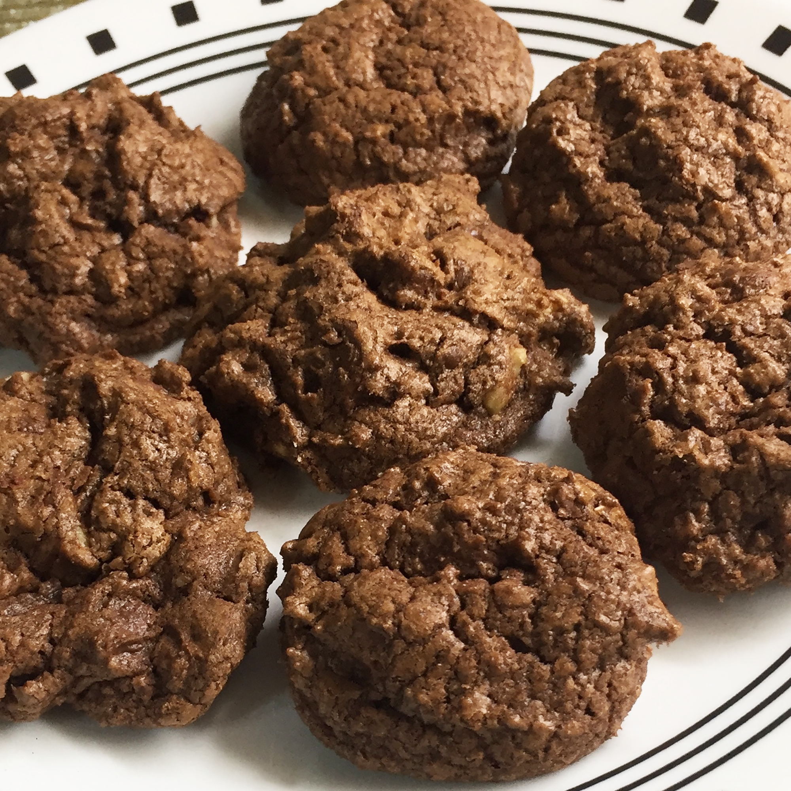

Chocolate Chip Cookies

Description
A quick and easy chocolate chip cookie recipe with a double dose of chocolate. This version uses vanilla and walnuts for extra flavour.
Ingredients
- 1 1/2 cups white sugar
- 1 cup butter, softened
- 2 eggs
- 2 teaspoons vanilla extract
- 2 cups flour
- 2/3 cup cocoa powder
- 3/4 teaspoon baking soda
- 1/4 teaspoon salt
- 2 cups semisweet chocolate chips
- 1/2 cup chopped walnuts
Steps
- Preheat the oven to 175 °C.
- Beat sugar, butter, eggs, and vanilla in a large bowl until light and fluffy.
- Combine flour, cocoa powder, baking soda, and salt in another bowl; stir into the butter mixture until well blended. Mix in chocolate chips and walnuts. Drop by rounded teaspoonfuls onto ungreased cookie sheets.
- Bake in the preheated oven just until set, 8 to 10 minutes. Cool slightly on the cookie sheets before transferring to wire racks to cool completely.